MF Beach Club is a rounded variable typeface in 4 styles: Sans, Sans Stencil, Serif and Serif Stencil. All these styles can be combined to add fun an flavour. The typeface is already supporting West EU language but still in progress cause we want to expand supported languages. Design by Corentin Echivard and Romain Marc (Milletype Foundry).
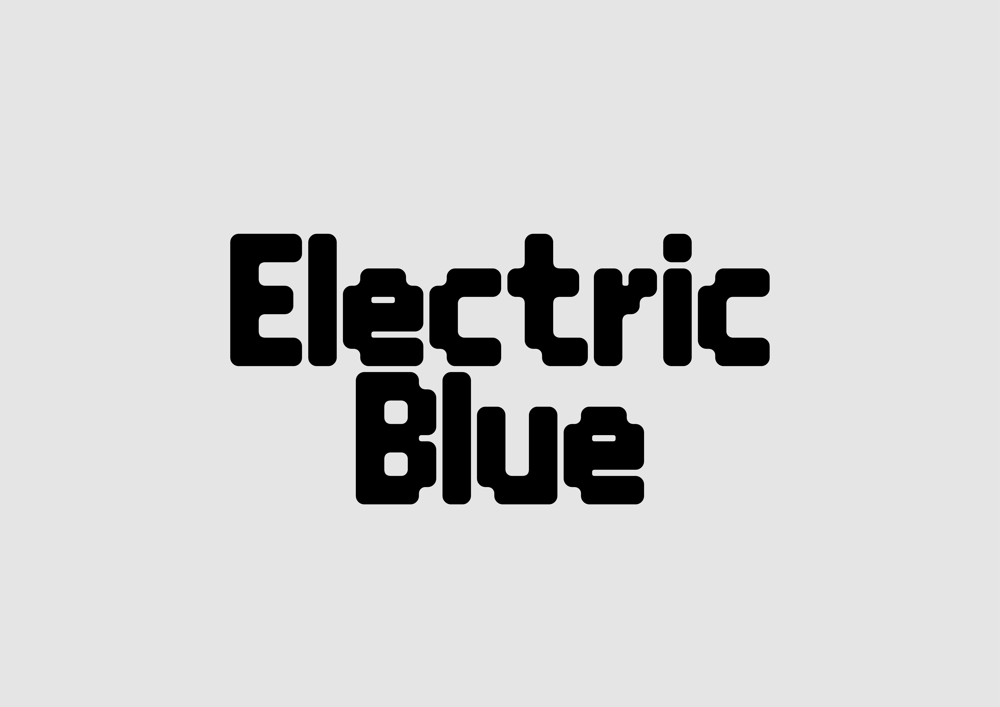
Electric Blue is a variable typeface in two axis (width and weight) inspired by the pixel design era and also a tribute to a famous Dutch graphic and type designer know as Wim Crouwel.
Design by Fontspectrum (Edgar Walthert & Daniel Maarleveld).
Stylistic set extension for the Purple Haze typeface to Greek and Georgian alphabets with the aim of expanding languages.
Design by Fontspectrum (Edgar Walthert & Daniel Maarleveld).
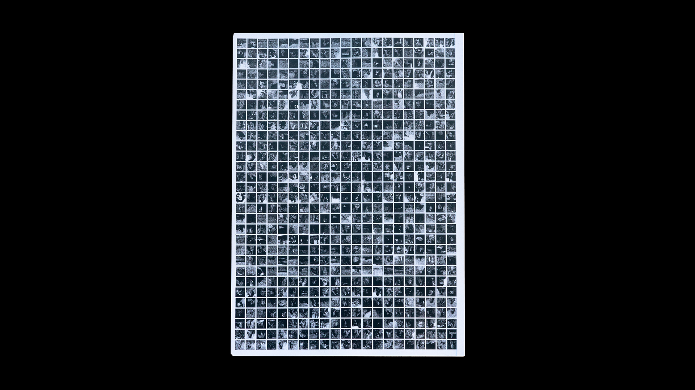
In Search Of tells the fictional story of a person generated by artificial intelligence. The story is read through a series of differents texts, following the ages of life, from birth to death. Mirrors of our lives, becauses generated from human data, the texts and images answer each other, questionning the notion of identity and easthetic norm. This generated person is incarnation of each one or of nobody. Summarizes and questions the way of producing with a tool wich does not know how to do anything, if not to reproduce everything.
Workshop done with Aurélien Brigaud and Antoine Jarno.
Hyphen is a stencil typeface inspired by the stencil writing found on shipping crates and construction sites. Both playful and elegant, it plays on the contrasts between the finesse of its strokes and the thickness of its punctuation points.
Design : Tabaramounien
Developement : Romain Marc
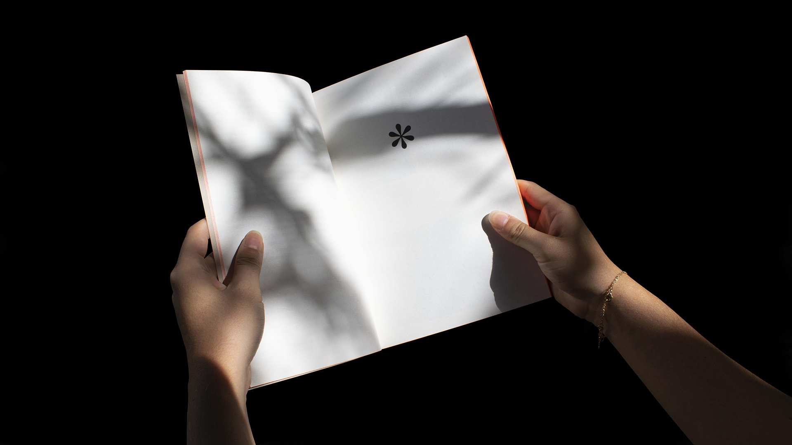
This publication was produced as part of a thesis project at the Campus Fonderie de l'Image (France). This book questions the different creative processes that are anchored in an extension of the history of typography by allowing its conservation, through the ages, by adapting old typographic characters or by larger creations that refer directly to a current.
128 pages
Cover 250gr/m2
Paper 80gr/m2
Glued square back
Fluorescent orange jaspage
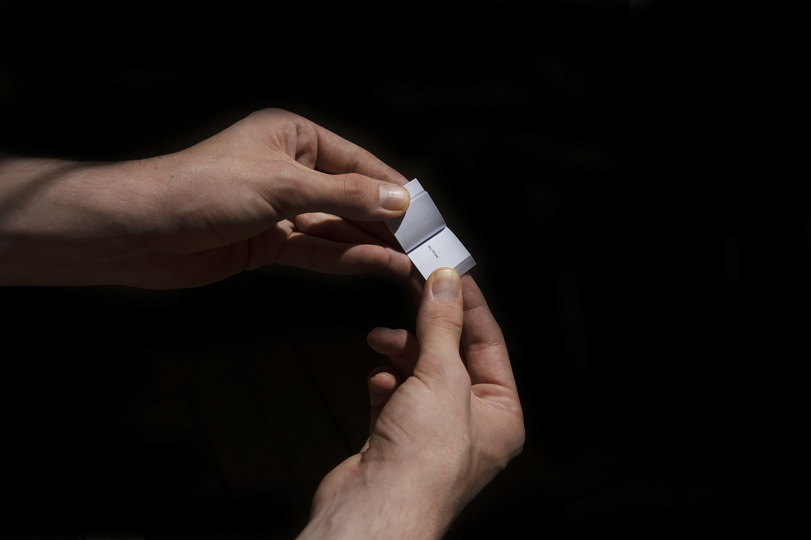
Typographic specimen made for the diploma project À la recherche. made with Antoine Jarno and Aurélien Brigaud.
This typographic specimen presents the generated display typography, the revival of a typography generated by artificial intelligence.
25.4 × 25.4 mm
212 pages
Paper 80g/m2
Glued square back
The PRAd'A (Palmarès Rédional d'architecture en Nouvelle-Aquitaine)
is a prize list aimed at rewarding architectural creations in the nouvelle-aquitaine region. The identity of this award is inspired by the classification into different categories: S, M, L, XL.
Based on adaptability, games of scale and construction revolving around a variable typography comprising 3 weights and 3 widths, thus offering a vast playground for the composition.
Design: Tabaramounien
Scenography: MJ Studio
Burner institute is a project of a fictitious persona of a protagonist, banker by day and graffiti artist by night. The realization of the specimens makes it possible to confront these two worlds, in a first time by the typography, drawn on thermosensitive paper using a lighter. In the second instance, through the invented typographic specimens. The posters take up the codes and composition grids of the old bank titles, the parchment takes up the texts of the global security law.
Done with Aurélien Brigaud, Corentin Echivar & Antoine Jarno
Posters: 1200 × 800 mm
Parchment: 210 × 8300 mm
Established between 2011 and 2019 in the Bordeaux radio landscape, La Supérette has offered a wide range of so-called electronic music where eras and genres mix without convention. Obscure musical niches, fallen artists or flashy novelties, each track is chosen with the greatest care. The Tabaramounian studio has accompanied the team of this redioshow graphically for several years. The creation of the typeface is inspired by the titles used for this on purpose.
Design: Tabaramounien
Development: Romain Marc
Wikipédia, how to translate the transition from a web encyclopedia to a printed encyclopedia.
Glued square back
96 pages
150x250mm
Digital printing
Garbo is a display typeface inspired by Art Deco period and his architecture.
Design: Tabaramounien
Development: Romain Marc
Creation of a typography summarising GPS instructions by transcribing them into code. Deployment of the logic on the Paris-Bordeaux route in an edition.
Workshop carried out at the Fonderie de l'Image Campus, under the supervision of Simon Renaud and Ariane Dubois.
Done with Antoine Jarno and Aurélien Brigaud.
240 × 360mm
72 pages
Matte paper 90gr/m2
Offset 300gr/m2
Glued square back
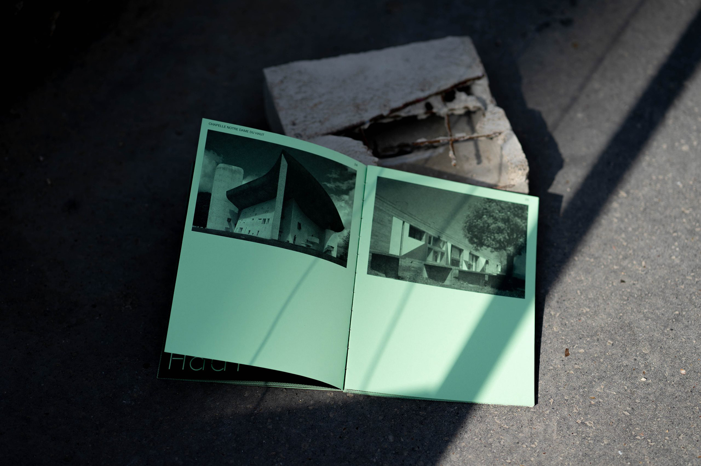
Ostensible is an editorial design project, the principle of a collection dealing with the question of brutalism in architecture.
This edition is composed of three issues, each dealing with a different subject and forming a common object.
The first issue of the series explores the subject of materials and more particularly reinforced concrete, the second issue is a biography of the famous architect Le Corbusier, the third issue presents different achievements of the architect and his evolution in styles.
The three books are collected in a concrete box produced by @ofthebridge.
180 × 240 mm
210 pages
160gr/m2 paper
Sewn square back
Bordeaux/Paris
+33 (0)6.31.41.14.65
hello@romainmarc.fr
Feel free to reach me via email for any inqueries.
Milletype Foundry: Co-founder, Type Designer
02-/10/2023 — Currently
Specter Design Group, Freelance Graphic Designer, Type Designer
01/08/2023 — 01/10/2023
"By machines of loving grace" Talk with Antoine Jarno and Aurélien Brigaud at Confortmental Paris, Organised by Pierre Vanni.
04/22/2023
Internship Font Spectrum (run by Edgar Walthert and Daniël Maarleveld), Type Design, Type Engineering.
01/04/2023 — 01/05/2023
Apprenticeship Tabaramounien design graphique, Graphic Designer, Junior Art Director.
09/01/2021 — 09/06/2022
Apprenticeship Studio de création MAIF, Graphic Designer, Junior Art Director.
10/07/2019 — 09/01/2021
Internship Agence Bulko Bordeaux, Graphic Designer.
07/01/2019 — 07/24/2019
Design identity for Karma Coffee.
05/01/2019 — 06/17/2019
Internship Imprimerie Sammarcelli, Assistant Foreman.
02/18/2019 — 25/03/2019
2022/2023 Erasmus + program Amsterdam
2020/2022 MA Creative Director in Graphic Design at Campus Fonderie de l’Image.
2018/2020 BA Graphic Designer at LISAA Bordeaux.
2017/2018 Preparatory year in applied arts at LISAA Nantes.


 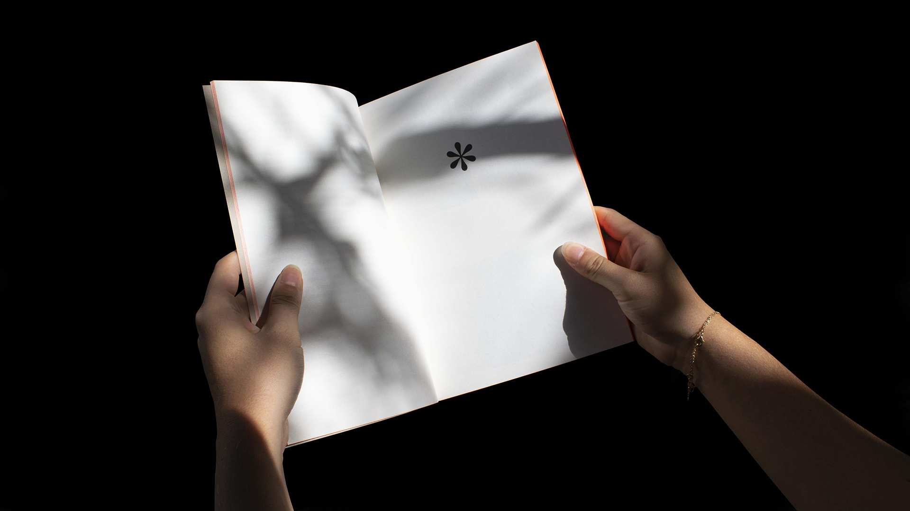
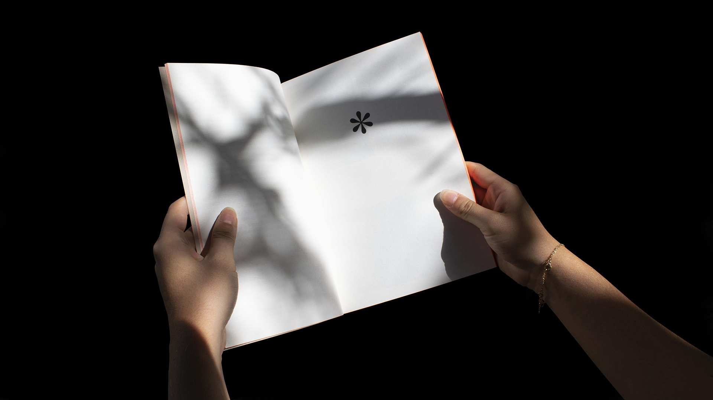


 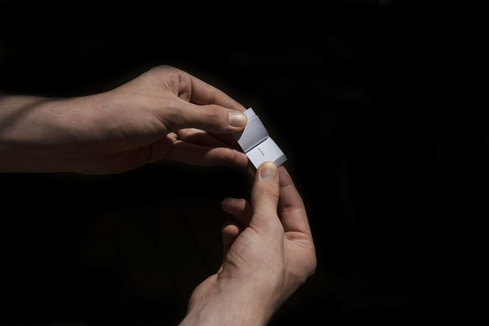
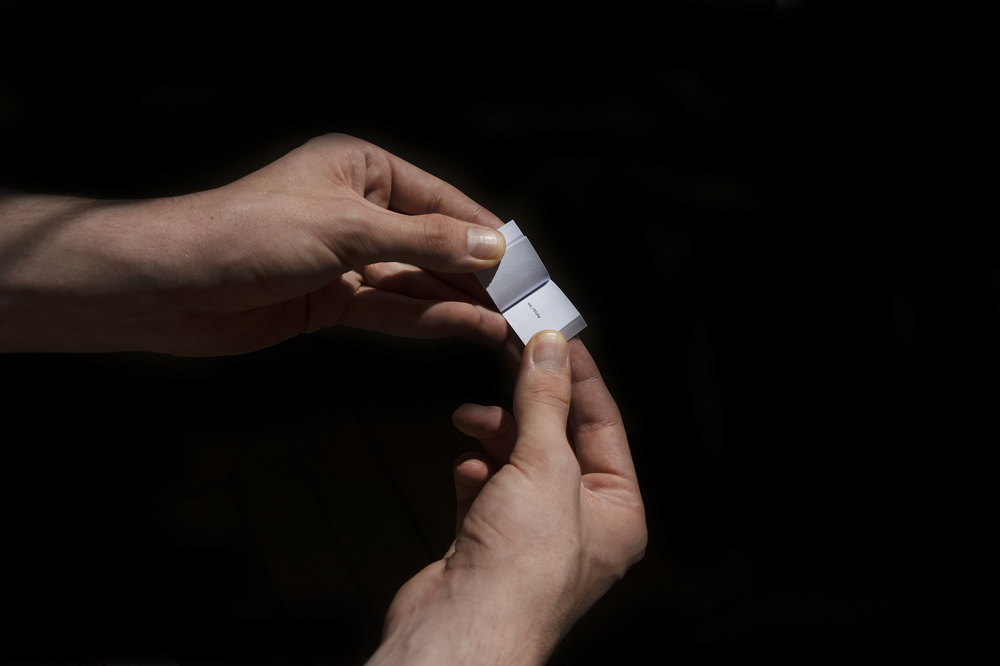


 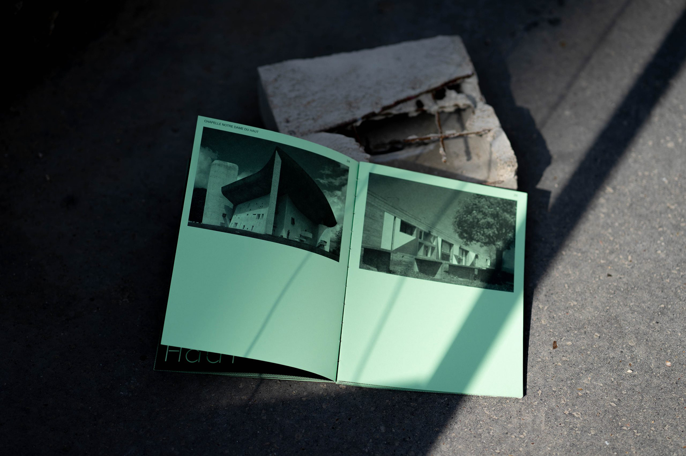
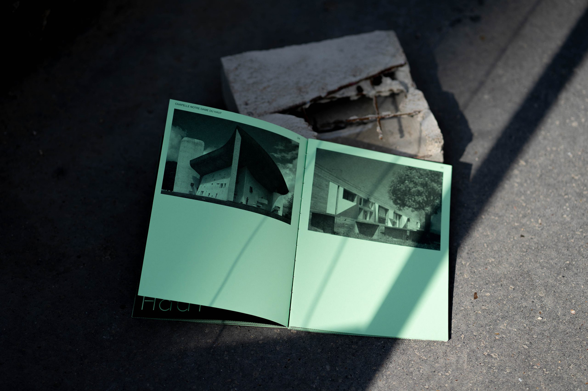